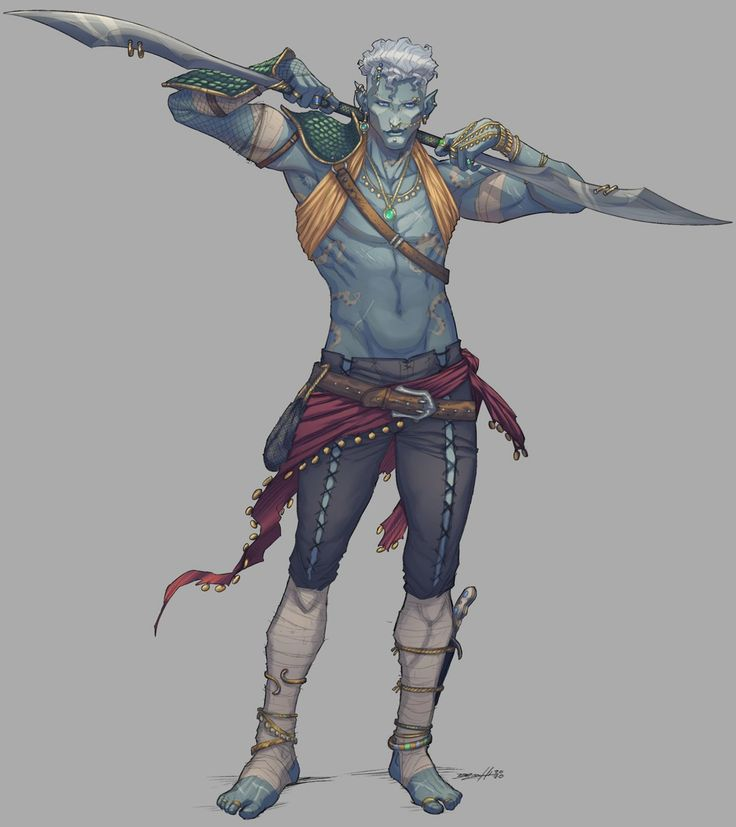

Aymer Diteranay
Personnage¶
Race : Elfe des mers
Classe : Ranger
Niveau : 1 (BM +2)
Points de vie : 12
Vitesse : 30 ft., Nage 30 ft.
| FOR | DEX | CON | INT | SAG | CHA |
|---|---|---|---|---|---|
| 9 (-1) | 20 (+5) | 14 (+2) | 12 (+1) | 13 (+1) | 17 (+3) |
| ◉ +1 | ◉ +7 | ◎ +2 | ◎ +1 | ◎ +1 | ◎ +3 |
| Compétences | |
|---|---|
| ◎ Acrobaties (Dex) : +5 | ◎ Investigation (Int) : +1 |
| ◎ Arcanes (Int) : +1 | ◎ Médecine (Sag) : +1 |
| ◎ Athlétisme (For) : -1 | ⬤ Nature (Int) : +5 |
| ◉ Discrétion (Dex) : +7 | ◉ Perception (Sag) : +3 |
| ◉ Dressage (Sag) : +3 | ◎ Persuasion (Cha) : +3 |
| ◎ Escamotage (Dex) : +5 | ◎ Religion (Int) : +1 |
| ◉ Histoire (Int) : +3 | ◎ Représentation (Cha) : +3 |
| ◎ Intimidation (Cha) : +3 | ◉ Survie (Sag) : +3 |
| ◎ Intuition (Sag) : +1 | ◎ Tromperie (Cha) : +3 |
Fiche récapitulative pour ceux qui ont la flemme (Merci Gemini !)
Vous êtes Aymer, un champion elfe des mers charismatique et un guerrier gracieux, envoyé en mission sur la terre ferme pour traquer et éliminer la source d'une pollution magique qui empoisonne votre foyer, l'océan.
Objectif pour la session :
Votre mission principale est de trouver des indices sur l'origine de la "souillure" qui affecte votre monde. Vous cherchez des informations sur des cultes étranges, des guildes d'alchimistes peu scrupuleuses ou toute autre activité suspecte près des côtes ou des rivières qui pourrait être la source du poison.
Parlez le Langage de l'Océan : Utilisez constamment des métaphores marines. Votre vision du monde est entièrement filtrée par votre vie sous-marine. Décrivez les choses et les gens avec des analogies liées à la mer, aux courants, aux créatures marines.
Jouez le "Poisson Hors de l'Eau" avec Curiosité : Vous êtes fasciné par le monde de la surface. Montrez votre étonnement face à des choses simples (le feu, les animaux terrestres, la nourriture cuite). Votre lien est avec l'océan, mais votre défaut est que vous devenez anxieux loin de l'eau ; cherchez activement des moyens de rester hydraté et proche de l'eau.
Bougez comme l'Eau : Incarnez sa grâce fluide. Même en étant immobile, ayez un léger balancement. En combat, ne soyez pas statique ; décrivez vos attaques comme une danse, un flux ininterrompu de deux lames, comme des vagues qui s'écrasent sur un rocher.
Maîtrises¶
Armure : Armures Légères, Armures Moyennes, Boucliers
Armes : Armes Simples, Armes Martiales
Outils : —
Langues : Commun, Aquatique, Elfique, Reptilien, Astral
Description¶
Âge : 1140 ans
Taille : 11,88 m
Poids : 78 kg
Aymer a la beauté surnaturelle et la présence assurée d'un prince guerrier d'un autre monde. Sa silhouette est élancée et athlétique, un équilibre parfait entre la grâce elfique et la puissance d'un prédateur endurci. Chaque muscle est dessiné, non pas avec la lourdeur d'un combattant de la surface, mais avec la fluidité d'un corps habitué à se mouvoir dans les trois dimensions de l'océan.
Sa peau est d'un bleu-gris profond, comme la couleur de l'océan par temps de tempête. Elle est parcourue de motifs tribaux ou naturels d'un bleu plus sombre qui ondulent sur son torse, ses bras et son visage, rappelant les courants marins ou les marques d'une créature des abysses.
Ses cheveux, d'un blanc argenté comme l'écume des vagues, sont coupés courts et coiffés avec une élégance nonchalante. Son visage est fin et anguleux, avec les oreilles pointues caractéristiques de son héritage elfique. Son regard est perçant et plein d'une confiance tranquille, ses yeux brillant d'une légère lueur aigue-marine. Un simple collier avec une gemme verte pend à son cou.
Il porte une tenue à la fois pratique et exotique. Son torse est largement découvert, révélant sa musculature. Un petit plastron de tissu ou de cuir doré couvre le haut de sa poitrine, tandis que son épaule gauche est protégée par une épaulière faite d'épaisses écailles d'un vert profond, semblables à celles d'un dragon marin. Un pantalon de corsaire sombre et ajusté est maintenu par une solide ceinture de cuir, à laquelle est noué un lambeau d'étoffe rouge qui flotte derrière lui. Ses avant-bras et ses jambes sont enveloppés de bandelettes de lin, et une dague de secours est solidement attachée à son mollet droit.
Ses deux armes de prédilection, qu'il manie avec une aisance déconcertante, ne sont pas des épées droites. Ce sont de longues lames incurvées et élégantes, au design rappelant des nageoires ou des crocs de créatures marines. Elles ont une teinte verdâtre et semblent aussi légères que l'eau et aussi tranchantes que le corail.
Chaque détail de son apparence, de la couleur de sa peau à la forme de ses lames, renforce son image de champion d'un monde aquatique : à la fois beau, exotique, et manifestement dangereux.

Aptitudes¶
Aptitudes de Race¶
Vision dans le noir. Habitué à la vie dans de denses forêts et au ciel nocturne, vous avez une vision supérieure dans l'obscurité et la lumière faible. Vous pouvez voir à 60 ft. (18m/12 cases) dans une zone de lumière faible comme vous verriez avec une lumière vive, et dans le noir comme avec une lumière faible. Vous ne pouvez pas discerner les couleurs dans l'obscurité, seulement les nuances de gris.
Ascendance Féérique. Vous avez l'avantage aux jets de sauvegarde contre les effets de charme et la magie ne peut pas vous endormir.
Transe. Les elfes n'ont pas besoin de dormir. Au lieu de cela, ils méditent profondément, restant à demi conscients, 4 heures par jour (le mot usuel pour désigner cette méditation est « transe »). En méditant, vous pouvez rêver, tant bien que mal ; ces rêves sont en fait des exercices mentaux qui deviennent un réflexe après des années de pratique. Après un repos de ce type, vous obtenez les mêmes avantages qu'un humain après 8 heures de sommeil.
Enfant de la Mer. Vous pouvez respirer dans et en dehors de l'eau, et vous avez la résistance aux dégâts de froid.
Ami de la Mer. Les animaux aquatiques ont une grande affinité avec votre peuple. Vous pouvez communiquer des idées simples à n'importe quelle Bête qui a une vitesse de nage. Elle peut vous comprendre, mais vous n'avez aucun moyen de les comprendre en retour.
Aptitudes de Classe¶
TODO¶
Favored Foe (Optional)¶
This 1st-level feature replaces the Favored Enemy feature and works with the Foe Slayer feature. You gain no benefit from the replaced feature and don't qualify for anything in the game that requires it.
When you hit a creature with an attack roll, you can call on your mystical bond with nature to mark the target as your favored enemy for 1 minute or until you lose your concentration (as if you were concentrating on a spell).
The first time on each of your turns that you hit the favored enemy and deal damage to it, including when you mark it, you increase that damage by 1d4.
You can use this feature to mark a favored enemy a number of times equal to your proficiency bonus, and you regain all expended uses when you finish a long rest.
This feature's extra damage increases when you reach certain levels in this class: to 1d6 at 6th level and to 1d8 at 14th level.
Equipement¶
- Une armure de cuir
- Deux épées courtes
- Un sac d'explorateur
- Un arc long, un carquois et 20 flèches
- Un filet de pêche, de la nourriture pour poissons
- 10 Pièces d'Or
Historique¶
Aymer est né dans la lumière douce et filtrée d'Aqualys, une cité sous-marine sculptée dans le corail vivant, où les rues sont des courants marins et les lanternes des perles phosphorescentes. Fils d'un diplomate respecté, il a grandi dans un monde de beauté, de silence et de danger constant. Dès son plus jeune âge, il était évident qu'il était béni par l'océan lui-même. Sa nage n'était pas un effort, mais une danse. Ses mouvements étaient si fluides qu'il semblait faire partie intégrante des courants qui traversaient la cité.
Il a rapidement rejoint les rangs des "Gardiens des Récifs", les protecteurs d'Aqualys. C'est là que son talent pour le combat à deux armes s'est révélé. Armé de deux épées courtes forgées dans un alliage de coquillage et de métal enchanté, il est devenu une légende. Il ne se battait pas avec la fureur d'un guerrier, mais avec la grâce d'un danseur. Chaque parade, chaque esquive, chaque coup était un mouvement dans une chorégraphie mortelle.
Son charisme naturel et sa confiance en soi, jamais arrogante, en ont fait un leader admiré. Il fut nommé chef des patrouilles de chasse, menant ses frères d'armes contre les menaces des abysses : les raids des Sahuagins, les embuscades des requins-garous, et les créatures monstrueuses qui remontaient des fosses les plus sombres.
Son heure de gloire, celle qui lui a valu son surnom de "Lame des Courants", est survenue lorsqu'un jeune serpent de mer, un "Draco Maris", a commencé à attaquer les routes commerciales entre Aqualys et les autres colonies. La créature était trop rapide et trop puissante pour être affrontée de front. Aymer a alors conçu un plan audacieux. Au lieu de poursuivre la bête, il l'a attirée dans un labyrinthe de canyons de corail étroits. Là, dans un ballet de feintes et de provocations, son équipe et lui ont utilisé leur connaissance parfaite des courants pour désorienter le monstre. Au moment crucial, Aymer lui-même a servi d'appât, menant le serpent dans une impasse où ses compagnons ont pu déclencher un éboulement de roches, piégeant la créature. Le combat qui s'ensuivit fut bref et intense, et c'est Aymer qui porta le coup de grâce, ses deux lames trouvant une faille dans les écailles de la bête.
Il était au sommet de sa gloire, un héros célébré. Mais une nouvelle menace, plus insidieuse, est apparue. Une "souillure" a commencé à empoisonner les eaux. Les poissons sont devenus difformes, les coraux ont blanchi, et une vase noire et huileuse, chargée d'une magie néfaste, a commencé à se répandre. Aymer et ses rangers ont suivi la piste de cette corruption. Ils ont trouvé des épaves de navires de la surface, leurs coques gravées de runes étranges. Ils ont découvert des barils qui fuyaient, libérant des produits chimiques inconnus. Chaque indice menait invariablement vers le haut, vers le monde de l'air.
Le conseil d'Aqualys a compris que la source du mal était hors de leur portée. Ils ne pouvaient pas mener une guerre sur la terre ferme. Ils ont donc pris la décision la plus difficile : envoyer leur plus grand champion, le seul dont les compétences et le charisme pourraient lui permettre de survivre et de réussir dans ce monde étrange et sec.
Aymer a accepté la mission sans hésiter, le cœur lourd de quitter son foyer mais animé par le devoir. Il a fait ses adieux à son peuple, a nagé une dernière fois dans les courants d'Aqualys, et a émergé à la surface, pour la première fois, sous la lumière crue et aveuglante du soleil. Il est maintenant un ambassadeur et un justicier, un poisson hors de l'eau qui doit apprendre les coutumes étranges de la terre ferme pour trouver et éradiquer le poison qui tue son monde.
Aptitude d'Historique¶
Traits de Personnalité¶
Traits : Je travaille dur ; la nature ne fait pas de cadeau. Je ne suis pas perturbé par les colères de la nature.
Idéal : Contiens ton avarice, et la nature te récompensera.
Lien : L'océan n'est pas juste mon foyer, il est le sang qui coule dans mes veines. Je ressens chaque blessure qu'on lui inflige comme la mienne, et je traquerai sans relâche ceux qui l'empoisonnent.
Défaut : Je deviens anxieux et déprimé si je suis loin de la mer trop longtemps.
Alignement : Neutre Bon
Conseils de jeu¶
Sa voix est calme et posée, avec une musicalité naturelle, comme le bruit des vagues qui viennent mourir sur la plage. Son ton est naturellement persuasif et agréable, ce qui explique en partie son charisme.
Il pense et parle en termes marins. C'est sa vision du monde.
- Un plan compliqué est "plus emmêlé qu'un champ d'algues".
- Une personne de confiance est "aussi fiable que la marée".
- Pour dire "allons-y", il dira "Suivons le courant".
- Une mauvaise situation est une "marée contraire".
Il n'est jamais parfaitement immobile. Même debout, il a un très léger balancement, un mouvement fluide et presque imperceptible, comme s'il était encore bercé par les courants de l'océan. Il se sent physiquement et mentalement mal à l'aise s'il reste "au sec" trop longtemps. Il a des tics liés à l'eau : il cherchera instinctivement la moindre fontaine pour y tremper ses mains, passera souvent une main humide dans ses cheveux, ou prendra un malin plaisir à marcher sous la pluie.